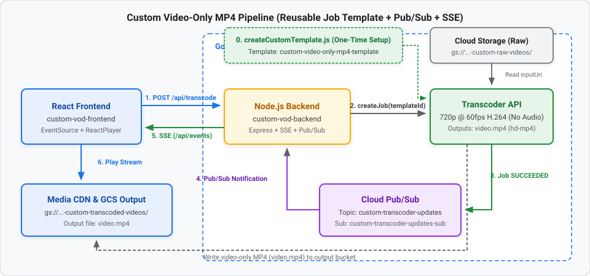

In this codelab, you will build an event-driven Custom Video-Only MP4 Transcoding Pipeline on Google Cloud using reusable Transcoder Job Templates, Cloud Pub/Sub, Node.js (Express + Server-Sent Events), and React.
Instead of passing a large inline encoding configuration on every API call, you will register a custom job template (custom-video-only-mp4-template) in the Google Cloud Transcoder API. This template encodes a high-frame-rate 720p @ 60fps H.264 video-only stream (video-stream0) and muxes it into a standalone video.mp4 container—automatically stripping any audio tracks from the input media.

View interactive diagram: Graphviz Architecture Diagram
gs://${PROJECT_ID}-custom-raw-videos) and transcoded output bucket (gs://${PROJECT_ID}-custom-transcoded-videos).custom-transcoder-updates) and pull subscription (custom-transcoder-updates-sub).createCustomTemplate.js): custom-video-only-mp4-template with a 1280x720 @ 60fps H.264 videoStream, an mp4 mux stream (video.mp4), and a pubsubDestination.custom-vod-backend/server.js): templateId: 'custom-video-only-mp4-template'.custom-transcoder-updates-sub for job completion and pushes the playback URL to the browser over Server-Sent Events (/api/events).custom-vod-frontend): react-player.gcloud) installed and authenticated.First, provision the Cloud Storage buckets and Cloud Pub/Sub resources for the custom pipeline.
Open a terminal and set your Google Cloud Project ID and region:
export PROJECT_ID="Your_project_id" # Replace with your GCP Project ID
export LOCATION="us-central1"
gcloud config set project $PROJECT_ID
gcloud services enable \
transcoder.googleapis.com \
pubsub.googleapis.com \
storage.googleapis.com
Create two Cloud Storage buckets—one for raw source videos and one for the transcoded video-only MP4 outputs:
# Bucket for source videos
gcloud storage buckets create gs://${PROJECT_ID}-custom-raw-videos --location=$LOCATION
# Bucket for transcoded output streams
gcloud storage buckets create gs://${PROJECT_ID}-custom-transcoded-videos --location=$LOCATION
Upload a test video (sample.mp4) to your raw videos bucket:
gcloud storage cp /path/to/your/sample.mp4 gs://${PROJECT_ID}-custom-raw-videos/sample.mp4
Create the custom-transcoder-updates topic and custom-transcoder-updates-sub subscription:
gcloud pubsub topics create custom-transcoder-updates
gcloud pubsub subscriptions create custom-transcoder-updates-sub \
--topic=custom-transcoder-updates
Allow the Google Cloud Transcoder service account to publish job state updates to custom-transcoder-updates:
PROJECT_NUMBER=$(gcloud projects describe $PROJECT_ID --format="value(projectNumber)")
gcloud pubsub topics add-iam-policy-binding custom-transcoder-updates \
--member="serviceAccount:service-${PROJECT_NUMBER}@gcp-sa-transcoder.iam.gserviceaccount.com" \
--role="roles/pubsub.publisher"
gcloud auth application-default login
Rather than embedding elementary stream and mux stream settings into every job request, you can save a Job Template in the Transcoder API and reference it by ID (custom-video-only-mp4-template).
Create the custom-vod-backend folder and install the required dependencies:
mkdir custom-vod-backend && cd custom-vod-backend
npm init -y
npm install express cors @google-cloud/video-transcoder @google-cloud/pubsub
createCustomTemplate.jsCreate a file named createCustomTemplate.js inside custom-vod-backend/:
// createCustomTemplate.js
const { TranscoderServiceClient } = require('@google-cloud/video-transcoder').v1;
async function createMp4Template() {
const projectId = 'Your_project_id'; // Replace with your Project ID
const location = 'us-central1';
const templateId = 'custom-video-only-mp4-template';
const TOPIC_NAME = `projects/${projectId}/topics/custom-transcoder-updates`;
const transcoderClient = new TranscoderServiceClient();
const request = {
parent: transcoderClient.locationPath(projectId, location),
jobTemplateId: templateId,
jobTemplate: {
config: {
pubsubDestination: { topic: TOPIC_NAME },
elementaryStreams: [
{
key: 'video-stream0',
videoStream: {
h264: {
heightPixels: 720,
widthPixels: 1280,
bitrateBps: 2500000,
frameRate: 60,
},
},
}
],
muxStreams: [
{
key: 'hd-mp4',
container: 'mp4',
fileName: 'video.mp4', // Explicitly name the output file
elementaryStreams: ['video-stream0'],
},
],
},
},
};
console.log('Creating custom MP4 template...');
try {
const [jobTemplate] = await transcoderClient.createJobTemplate(request);
console.log(`✅ Job template created successfully: ${jobTemplate.name}`);
} catch (error) {
if (error.code === 6) {
console.log('Template already exists. Proceeding...');
} else {
console.error('Error creating template:', error);
}
}
}
createMp4Template().catch(console.error);
jobTemplateId: 'custom-video-only-mp4-template': Registers a reusable template resource under projects/${projectId}/locations/${location}/jobTemplates/custom-video-only-mp4-template.pubsubDestination: Built directly into the template so every job created with this template automatically publishes completion events to custom-transcoder-updates.elementaryStreams: Defines a single video-stream0 track (1280x720, 60 fps, 2.5 Mbps H.264). Because no audioStream is defined or referenced, the Transcoder API strips all audio from the input video.muxStreams: Packages video-stream0 into a standalone MP4 container (container: 'mp4') named video.mp4.error.code === 6): gRPC status code 6 (ALREADY_EXISTS) is caught gracefully if you run the script more than once.Run the script once to create the template in Google Cloud:
node createCustomTemplate.js
Expected output:
Creating custom MP4 template...
✅ Job template created successfully: projects/.../locations/us-central1/jobTemplates/custom-video-only-mp4-template
With the job template registered in Google Cloud, your Express server's /api/transcode endpoint only needs to specify inputUri, outputUri, and templateId: 'custom-video-only-mp4-template'.
custom-vod-backend/server.jsCreate server.js inside custom-vod-backend/:
const express = require('express');
const cors = require('cors');
const { TranscoderServiceClient } = require('@google-cloud/video-transcoder').v1;
const { PubSub } = require('@google-cloud/pubsub');
const app = express();
app.use(cors());
app.use(express.json());
const PROJECT_ID = 'Your_project_id'; // Replace with your Project ID
const LOCATION = 'us-central1';
// 1. UPDATED: New Pub/Sub Topic and Subscription names
const SUB_NAME = 'custom-transcoder-updates-sub';
const OUTPUT_BUCKET = `${PROJECT_ID}-custom-transcoded-videos`;
const CDN_DOMAIN = 'https://media.yourdomain.com';
let clients = []; // Store connected SSE clients
// --- Real-time SSE Endpoint ---
app.get('/api/events', (req, res) => {
res.setHeader('Content-Type', 'text/event-stream');
res.setHeader('Cache-Control', 'no-cache');
res.setHeader('Connection', 'keep-alive');
res.flushHeaders();
clients.push(res);
req.on('close', () => {
clients = clients.filter(client => client !== res);
});
});
const sendEventToClients = (data) => {
clients.forEach(client => client.write(`data: ${JSON.stringify(data)}\n\n`));
};
// --- Transcoder Submit Endpoint ---
app.post('/api/transcode', async (req, res) => {
const { fileName } = req.body;
const transcoderClient = new TranscoderServiceClient();
const request = {
parent: transcoderClient.locationPath(PROJECT_ID, LOCATION),
job: {
inputUri: `gs://${PROJECT_ID}-custom-raw-videos/${fileName}`,
outputUri: `gs://${OUTPUT_BUCKET}/custom-transcoded-videos/-${fileName}/`,
templateId: 'custom-video-only-mp4-template',
}
};
try {
const [response] = await transcoderClient.createJob(request);
res.json({ message: 'Job submitted', jobName: response.name });
} catch (error) {
console.error('Error submitting job:', error);
res.status(500).json({ error: error.message });
}
});
// --- Pub/Sub Worker Listener ---
const pubsub = new PubSub({ projectId: PROJECT_ID });
const subscription = pubsub.subscription(SUB_NAME);
subscription.on('message', async message => {
try {
const transcoderClient = new TranscoderServiceClient();
const data = JSON.parse(message.data.toString());
console.log(data);
const jobName = data.job.name;
const jobState = data.job.state;
// Extract folder name from outputUri to build the CDN URL
if (data.job.state === 'SUCCEEDED') {
// 1. Ask the Transcoder API for the full configuration
const [jobDetails] = await transcoderClient.getJob({ name: jobName });
// 2. Extract the output URI
const outputUri = jobDetails.config.output.uri;
// 3. Parse the folder name
const folder = outputUri.split('/').filter(Boolean).pop();
const url = `${CDN_DOMAIN}/${folder}/manifest.m3u8`;
sendEventToClients({ state: 'SUCCEEDED', url: url });
}
} catch (err) {
console.error('Message parse error:', err);
}
message.ack();
});
app.listen(8080, () => console.log('Backend running on port 8080'));
Now scaffold the React frontend application that submits jobs to http://localhost:8080/api/transcode and listens for SSE updates on http://localhost:8080/api/events.
In a new terminal window, run:
npm create vite@latest custom-vod-frontend -- --template react
cd custom-vod-frontend
npm install
npm install react-player
src/App.jsxReplace the contents of custom-vod-frontend/src/App.jsx with:
import React, { useState, useEffect } from 'react';
import ReactPlayer from 'react-player';
import './App.css';
function App() {
const [fileName, setFileName] = useState('sample.mp4');
const [status, setStatus] = useState('Idle');
const [videoUrl, setVideoUrl] = useState(null);
useEffect(() => {
// Connect to the backend Server-Sent Events stream
const eventSource = new EventSource('http://localhost:8080/api/events');
eventSource.onmessage = (event) => {
const data = JSON.parse(event.data);
setStatus(data.state);
if (data.state === 'SUCCEEDED' && data.url) {
setVideoUrl(data.url);
}
};
return () => eventSource.close();
}, []);
const startTranscoding = async () => {
setStatus('Submitting...');
setVideoUrl(null);
try {
await fetch('http://localhost:8080/api/transcode', {
method: 'POST',
headers: { 'Content-Type': 'application/json' },
body: JSON.stringify({ fileName })
});
setStatus('Processing');
} catch (err) {
setStatus('Error submitting job');
}
};
return (
<div style={{ padding: '40px', fontFamily: 'sans-serif' }}>
<h2>Google Cloud VOD Pipeline</h2>
<div style={{ marginBottom: '20px' }}>
<input
type="text"
value={fileName}
onChange={(e) => setFileName(e.target.value)}
placeholder="File in raw bucket (e.g., sample.mp4)"
style={{ padding: '8px', width: '250px' }}
/>
<button onClick={startTranscoding} style={{ padding: '8px 16px', marginLeft: '10px' }}>
Transcode Video
</button>
</div>
<div style={{ marginBottom: '20px', padding: '15px', background: '#f1f3f4', borderRadius: '8px', display: 'inline-block' }}>
<strong>Status: </strong> {status}
</div>
{videoUrl && (
<div style={{ border: '2px solid #1a73e8', borderRadius: '8px', overflow: 'hidden', width: 'fit-content' }}>
<ReactPlayer
url={videoUrl}
controls={true}
playing={true}
width="800px"
height="450px"
/>
</div>
)}
</div>
);
}
export default App;
In your custom-vod-backend terminal:
node server.js
In your custom-vod-frontend terminal:
npm run dev
http://localhost:5173).sample.mp4 and click Transcode Video.video.mp4 file in your output bucket:gcloud storage ls gs://${PROJECT_ID}-custom-transcoded-videos/custom-transcoded-videos/-sample.mp4/
To avoid incurring unnecessary Google Cloud charges, clean up the resources created in this codelab:
# Delete the custom Transcoder Job Template
gcloud transcoder templates delete custom-video-only-mp4-template --location=$LOCATION
# Delete Pub/Sub subscription and topic
gcloud pubsub subscriptions delete custom-transcoder-updates-sub
gcloud pubsub topics delete custom-transcoder-updates
# Delete Cloud Storage buckets
gcloud storage rm -r gs://${PROJECT_ID}-custom-raw-videos
gcloud storage rm -r gs://${PROJECT_ID}-custom-transcoded-videos
You have built a Custom Video-Only MP4 Transcoding Pipeline using reusable Google Cloud Transcoder Job Templates, Cloud Pub/Sub, Node.js (Express + SSE), and React!